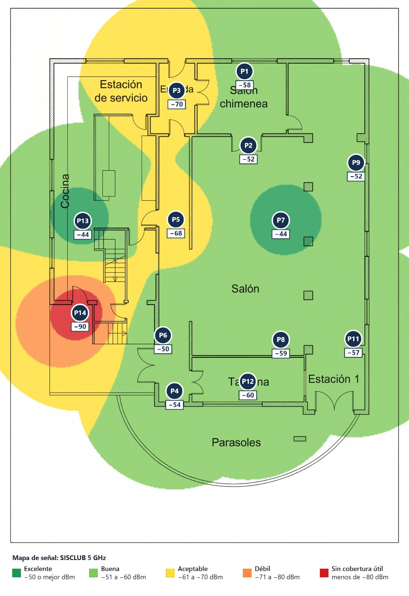
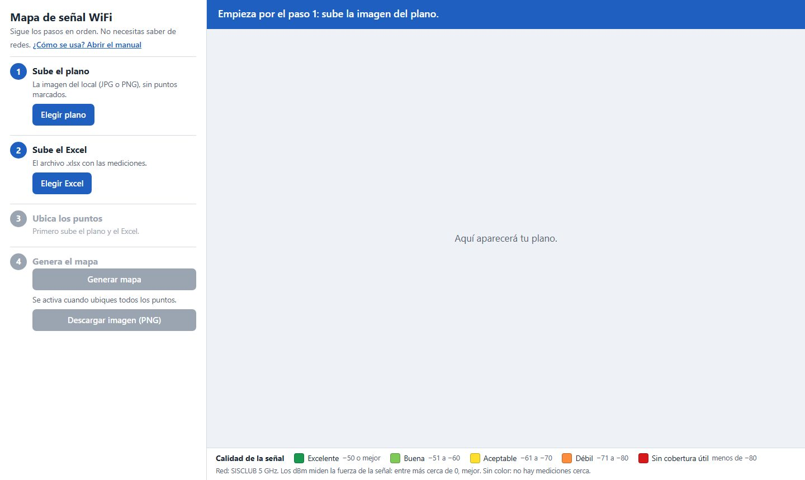
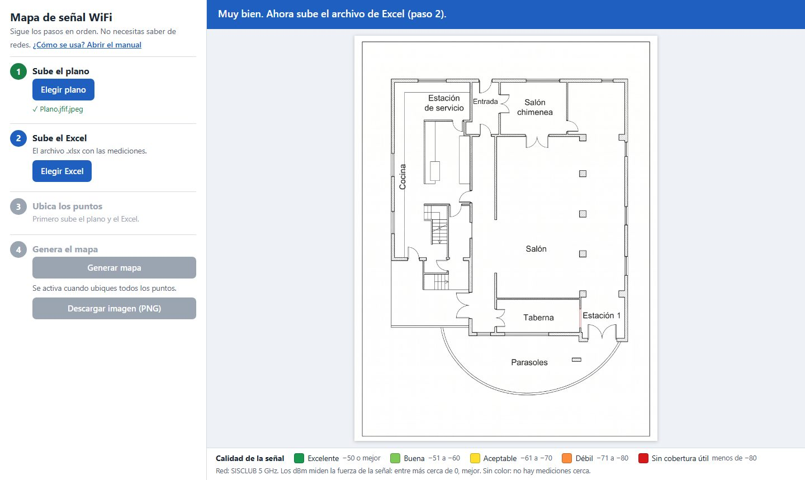
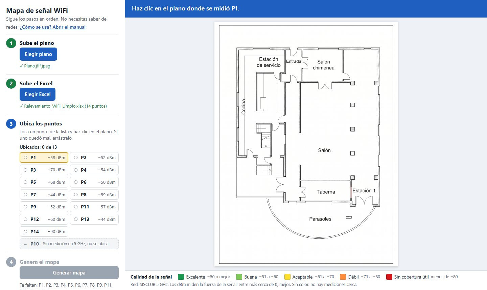
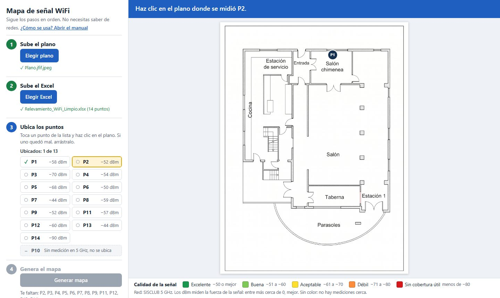
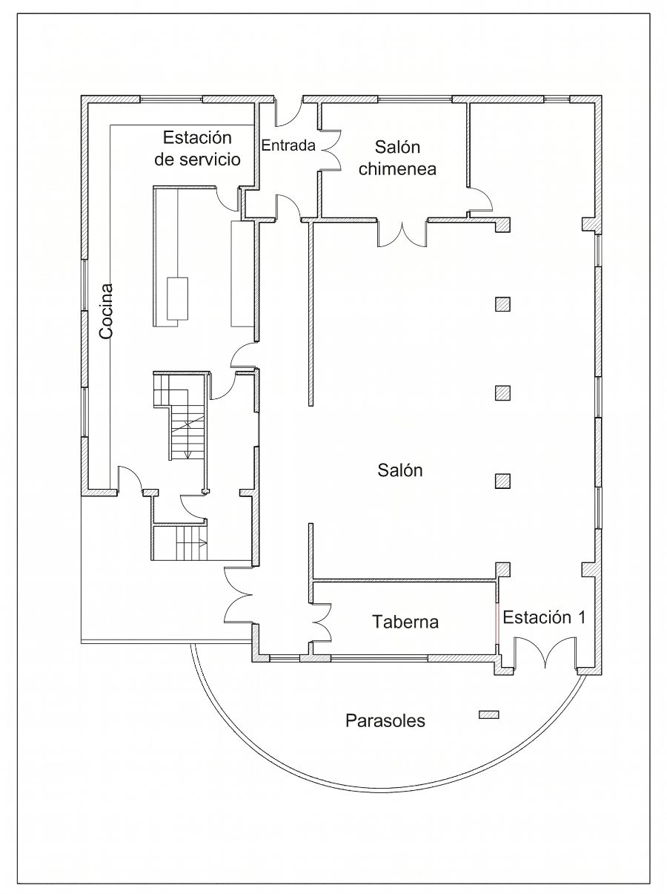
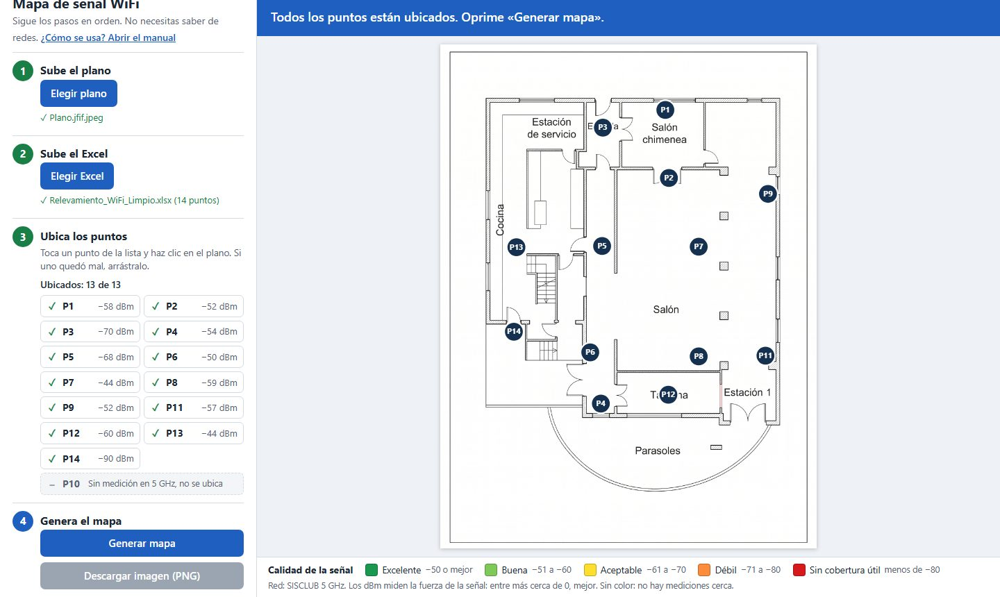
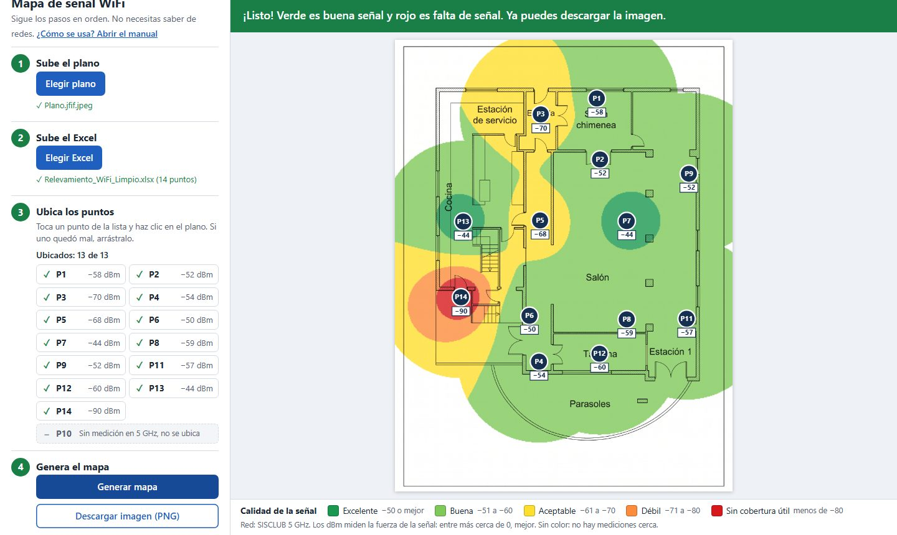

Manual interactivo · Redes de Datos II
Tu misión: convertir unas mediciones de WiFi en un mapa de colores del local. Sin saber de redes, en unos 15 minutos.
Supera los 7 niveles en orden. Cada nivel termina con un reto que te da hasta 3 estrellas. Al final ganas tu diploma.
🏆
Escribe tu nombre para tu diploma:
Diploma
Se otorga a
por hacer su primer mapa de señal WiFi y aprender a leerlo,
con 0 estrellas de 21.
🎉
Tu misión
Con este manual vas a convertir unas mediciones de WiFi en un mapa de colores del local, como este. Solo tienes que seguir los niveles en orden.

Cómo funciona este manual. Avanza con Siguiente →. Las palabras con se explican si las tocas. Si te pierdes, el botón ? de arriba abre la ayuda. Si cierras el manual, al volver a abrirlo sigue donde ibas.
Tu equipo
Cuatro archivos, todos en la misma carpeta.
También necesitas un computador con Google Chrome o Microsoft Edge. No hace falta internet ni instalar nada.
Idea 1 de 3
El manda la señal WiFi por el aire, como una bombilla manda luz. Cerca del router la señal es fuerte; lejos, o detrás de muchas paredes, llega débil y el internet se pone lento o se cae.
Idea 2 de 3
La señal se mide con un número negativo llamado . Lo único que debes recordar: entre más cerca de 0, mejor. Por eso −44 es mejor que −70.
Idea 3 de 3
Alguien caminó por el local con un celular y anotó la señal en 14 lugares, llamados (P1, P2… P14). El programa pinta todo el plano usando esos números: verde donde la señal es buena y rojo donde es mala. Eso es un .
Lo único que el programa no sabe es dónde se tomó cada medición. Eso se lo vas a decir tú, haciendo clic en el plano.
⭐ Reto del nivel
Toca las señales empezando por la más fuerte y terminando por la más débil.
Preparación
El programa es el archivo Maplify.html. Se abre en el navegador, como una página web, pero funciona sin internet.

Si algo raro pasa
Pasa cuando el computador no sabe con qué abrir el archivo. Haz esto:
Importante
Los puntos que ubiques se pierden si cierras la pestaña. Si lo intentas, el navegador te preguntará si quieres salir: responde que no.
⭐ Reto del nivel
Esta es tu carpeta. ¿Qué archivo abres para hacer el mapa?
Paso 1 de 4
El plano es el dibujo del local visto desde arriba. Sobre él se pintará el mapa.
Ojo
En la carpeta puede haber otra imagen llamada Puntos de medicion.jfif.jpeg, que ya tiene puntos dibujados. Esa no: elige Plano.jfif.jpeg.
Comprueba
El plano aparece a la derecha, el círculo del paso 1 se pone verde, debajo del botón sale ✓ Plano.jfif.jpeg y la barra azul dice «Muy bien. Ahora sube el archivo de Excel (paso 2).»

⭐ Reto del nivel
Toca la imagen que debes elegir en el paso 1.
Paso 2 de 4
El Excel trae los números de la señal medidos en cada punto. El programa los lee solo; tú no tienes que abrir el Excel.
Si tienes el Excel abierto en Excel, ciérralo antes. Algunos computadores no dejan que dos programas usen el mismo archivo a la vez.
Comprueba
Aparece ✓ Relevamiento_WiFi_Limpio.xlsx (14 puntos) y, en el paso 3, la lista de puntos con su señal en dBm.

AB⭐ Reto del nivel
Este es un programa de práctica. Haz lo mismo que harás en el de verdad.
Paso 3 de 4
Este es el paso más largo. Vas a decirle al programa dónde se midió cada punto, haciendo un clic en el plano por cada uno.

12Tu guía
Toca cualquier círculo para ver dónde va y cuánta señal tiene. También puedes tocar una fila de la tabla.

| Punto | Dónde va | Señal |
|---|
Sin miedo a equivocarte

✓⭐ Reto del nivel
Haz clic en el plano donde va cada punto, como en el programa. Si no lo recuerdas, usa la pista.
Paso 4 de 4
Ya hiciste lo difícil. Ahora el programa hace las cuentas por ti.
Paso 4 de 4

3Tu premio
Se guarda en la carpeta Descargas del computador con el nombre maplify-senal-SISCLUB-5GHz.png. Trae el mapa, el título y la explicación de los colores, lista para ponerla en un informe o una presentación.
¿Moviste un punto después de generar? Los colores se borran y la barra dice «Moviste un punto. Oprime «Generar mapa» otra vez.» Solo vuelve a oprimir el botón.
⭐ Reto del nivel
Ya están los 13 puntos. Haz que el programa pinte el mapa.
Entender el resultado
Cada color es un nivel de señal. Esta tabla es la misma que aparece debajo del mapa.
Entender el resultado
👑 Jefe final
Siete preguntas y tres vidas. Cada error te quita una.
Nivel extra · para curiosos
No necesitas esto para hacer el mapa, pero te ayuda a explicarlo.
Una persona fue a cada uno de los 14 puntos del local con un celular y una aplicación que muestra las redes WiFi cercanas. En cada punto anotó todas las redes que veía, su señal en dBm y su (2.4 GHz o 5 GHz). Todo quedó en el Excel: 257 filas.
Nivel extra
En el local se ven muchas redes, pero la que importa es SISCLUB, la red del lugar. Además, una misma red transmite en dos bandas que se comportan distinto, así que mezclarlas en un mapa confundiría. Este mapa muestra SISCLUB en 5 GHz.
Nivel extra
Nivel extra
Entre dos puntos medidos, el programa estima la señal con un promedio: cada medición cuenta más entre más cerca esté. Este método se llama . Mueve la barra para caminar por un pasillo de 8 metros con una medición en cada extremo.
El programa hace esta misma cuenta con los 13 puntos a la vez, para miles de cuadritos del plano, y pinta cada cuadrito con el color que le toca.
Nivel extra
El mapa no tiene en cuenta las paredes. En la vida real una pared gruesa debilita la señal, pero el cálculo solo mira distancias. Por eso el mapa es una buena aproximación, no una medición exacta de cada rincón. Entre más puntos se midan, más fiel queda.